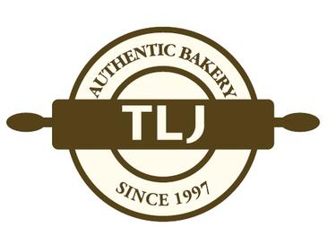

홈 > 브랜드 매거진 > 파리바게뜨
파리바게뜨 Paris Baguette
파리바게뜨(Paris Baguette)는 SPC그룹의 파리크라상이 운영하는 한국 1위 베이커리 프랜차이즈로, 1988년 출범했다.
산업 분야 식음료 · 공개 등급 자료 기반 · 브랜드 평가 4.4 ★
한눈에 보는 브랜드
파리바게뜨(Paris Baguette)는 SPC그룹 계열 파리크라상이 운영하는 베이커리 프랜차이즈다. 1988년 출범했다.
브랜드 관점
베이크오프 방식으로 국내 베이커리 프랜차이즈를 평정한 SPC그룹의 대표 브랜드로, 북미 등 해외로 확장하고 있다.
시작과 성장
1988년 파리크라상이 서울 광화문에 1호점을 열며 출발했다. 매장에서 직접 굽는 베이크오프 방식으로 가맹 사업을 키웠고, 모기업은 2004년 SPC그룹으로 통합됐다.
브랜드 아이덴티티
바게트·크루아상·케이크 등을 앞세운 한국 1위 베이커리 프랜차이즈로, 국내 수천 개 매장과 함께 미국·중국·동남아 등 해외로 진출해 K-베이커리를 대표한다.
제품과 서비스
빵·케이크·샌드위치·커피 등을 파는 베이커리 프랜차이즈로, 국내 최대 베이커리 가맹 브랜드다.
사람들
현재 상태
2024년 글로벌 600호점을 돌파했고, 미국을 중심으로 약 15개국에 진출해 2030년 북미 1,000개 매장을 목표로 확장하고 있다.
타임라인
BI/CI 변천사
자주 묻는 질문
파리바게뜨의 브랜드 아이덴티티는 무엇인가요?
바게트·크루아상·케이크 등을 앞세운 한국 1위 베이커리 프랜차이즈로, 국내 수천 개 매장과 함께 미국·중국·동남아 등 해외로 진출해 K-베이커리를 대표한다.
파리바게뜨의 대표 제품은 무엇인가요?
빵·케이크·샌드위치·커피 등을 파는 베이커리 프랜차이즈로, 국내 최대 베이커리 가맹 브랜드다.
파리바게뜨는 현재 어떤 상태인가요?
2024년 글로벌 600호점을 돌파했고, 미국을 중심으로 약 15개국에 진출해 2030년 북미 1,000개 매장을 목표로 확장하고 있다.
파리바게뜨의 공식 웹사이트는 어디인가요?
파리바게뜨의 공식 웹사이트는 https://www.paris.co.kr/ 입니다.
함께 읽을 브랜드

식음료 · 자료 기반뚜레쥬르(Tous les Jours)뚜레쥬르(Tous les Jours)는 CJ푸드빌이 운영하는 대한민국의 베이커리 프랜차이즈다. 1997년 1호점을 열었으며 '매일매일'을 뜻하는 프랑스어 이름처럼 갓...
 식음료 · 자료 기반메가MGC커피(Mega MGC Coffee)
식음료 · 자료 기반메가MGC커피(Mega MGC Coffee)메가MGC커피(Mega MGC Coffee)는 2015년 시작된 한국의 저가 대용량 커피 프랜차이즈다.
 식음료 · 자료 기반공차(Gong Cha)
식음료 · 자료 기반공차(Gong Cha)공차(Gong Cha)는 대만에서 시작된 버블티 브랜드의 한국 사업을 운영하는 공차코리아의 브랜드다.
식음료 · 자료 기반오설록(OSULLOC)오설록은 아모레퍼시픽그룹이 운영하는 한국의 프리미엄 차 브랜드다. 제주 다원에서 재배한 녹차와 발효차를 중심으로, 잎차와 티백, 디저트, 카페 공간까지 아우르는 차...
펩시(Pepsi)는 1893년 미국 노스캐롤라이나주 뉴번의 약사 케일럽 브래덤이 만든 탄산음료에서 출발해 1898년 '펩시콜라'로 개명된 음료 브랜드다. 1965년...
BI
비비고
식음료 · 자료 기반비비고(bibigo)비비고(bibigo)는 CJ제일제당이 2010년 출시한 글로벌 한식 브랜드로, 만두·김치·즉석밥·한식 소스 등 100여 종의 한국 식품을 약 70개국에서 판매한다.
 식음료 · 자료 기반노티드(Knotted)
식음료 · 자료 기반노티드(Knotted)노티드는 운영사 지에프에프지가 전개하는 프리미엄 도넛·디저트 브랜드다. 우유생크림도넛으로 대표되는 구멍 없는 생크림 도넛을 앞세워 오픈런을 부르는 인기 디저트로 자리...
 식음료 · 자료 기반더본코리아(TheBorn Korea)
식음료 · 자료 기반더본코리아(TheBorn Korea)더본코리아는 백종원이 이끄는 한국의 외식 프랜차이즈 기업으로, 빽다방·홍콩반점·새마을식당·한신포차 등 다수의 외식 브랜드를 한 회사 안에서 운영한다. 가맹사업을 중심...